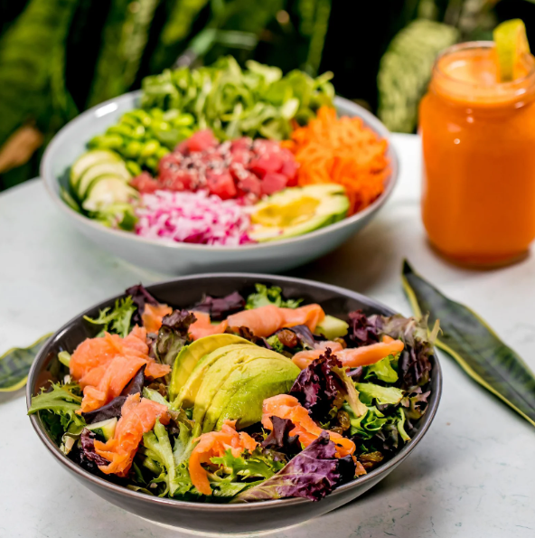
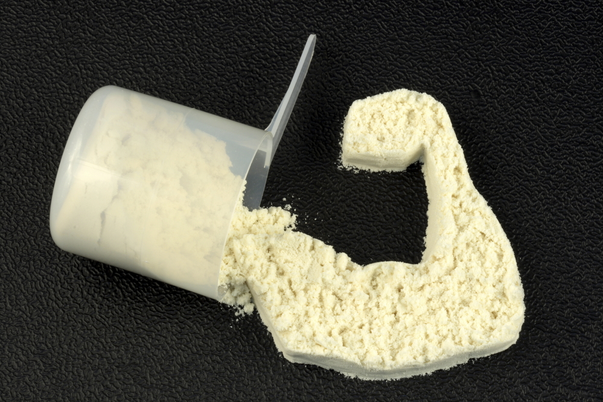

CrossFit Nutrition
Proper nutrition is an essential part of any CrossFit training program. Eating a balanced and healthy diet can help you achieve your fitness goals and recover faster after workouts.
Here are some healthy foods that you should include in your diet:
- Lean meats, such as chicken and turkey
- Fatty fish, such as salmon and tuna
- Eggs
- Low-fat dairy products, such as milk and yogurt
- Whole grains, such as brown rice and quinoa
- Fruits and vegetables, especially leafy greens and berries
- Nuts and seeds, such as almonds and chia seeds
Meal Plans

Creating a meal plan can help you stay on track with your nutrition goals. Here's an example of a healthy meal plan for a day:
- Breakfast: Oatmeal with berries and almond milk
- Snack: Apple slices with almond butter
- Lunch: Grilled chicken salad with mixed greens and avocado
- Snack: Greek yogurt with honey and walnuts
- Dinner: Baked salmon with roasted sweet potatoes and broccoli
- Snack: Carrots and hummus
Remember to drink plenty of water throughout the day and to avoid sugary and processed foods as much as possible.
Supplements
In addition to eating a healthy diet, you may also want to consider taking supplements to support your CrossFit training. Here are some supplements that can be beneficial:
- Protein powder
- Creatine
- BCAAs
- Omega-3 fish oil
- Vitamin D
Before taking any supplements, be sure to consult with your doctor or a qualified nutritionist to ensure they are safe and appropriate for your individual needs.